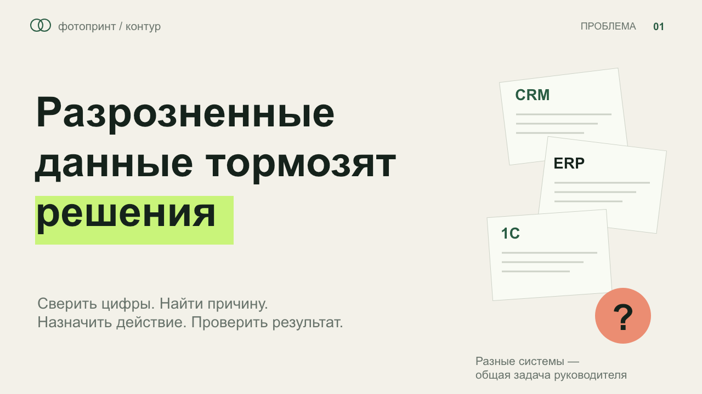

<!doctype html><html lang="ru"><meta charset="utf-8"><meta name="viewport" content="width=device-width,initial-scale=1"><title>Фотопринт — презентация</title><style>*{box-sizing:border-box}body{margin:0;background:#101D17;color:#F9FBF4;font:16px system-ui;display:flex;flex-direction:column;height:100vh}main{flex:1;min-height:0;display:flex;align-items:center;justify-content:center;padding:12px}img{max-width:100%;max-height:100%;object-fit:contain;box-shadow:0 8px 40px #0005}nav{display:flex;align-items:center;justify-content:center;gap:24px;padding:14px;background:#0b211e}button,a{border:1px solid #C9F47A;background:#295C43;color:inherit;border-radius:8px;padding:10px 18px;font:inherit;cursor:pointer;text-decoration:none}button:disabled{opacity:.35;cursor:default}#count{min-width:60px;text-align:center}.hint{font-size:13px;opacity:.65}@media(max-width:700px){.hint{display:none}nav{gap:10px}button,a{padding:9px 12px}}</style><main></main><nav aria-label="Управление презентацией"><button id="prev" aria-label="Предыдущий слайд">←</button><span id="count" aria-live="polite">1 / 7</span><button id="next" aria-label="Следующий слайд">→</button><span class="hint">← → или пробел</span><button id="full">Полный экран</button><a href="output/fotoprint-presentation.pptx" download>PowerPoint</a></nav><script>let current=1;const total=7;function show(n){current=Math.max(1,Math.min(total,n));document.querySelector('#slide').src='previews-redesign/slide-'+String(current).padStart(2,'0')+'.png?revision=evolution7';document.querySelector('#slide').alt='Слайд '+current;document.querySelector('#count').textContent=current+' / '+total;document.querySelector('#prev').disabled=current===1;document.querySelector('#next').disabled=current===total;location.hash=String(current)}document.querySelector('#prev').onclick=()=>show(current-1);document.querySelector('#next').onclick=()=>show(current+1);document.querySelector('#full').onclick=()=>document.fullscreenElement?document.exitFullscreen():document.documentElement.requestFullscreen();document.addEventListener('keydown',e=>{if(['ArrowRight','PageDown',' '].includes(e.key)){e.preventDefault();show(current+1)}if(['ArrowLeft','PageUp'].includes(e.key)){e.preventDefault();show(current-1)}if(e.key==='Home')show(1);if(e.key==='End')show(total)});show(Number(location.hash.slice(1))||1);</script></html>